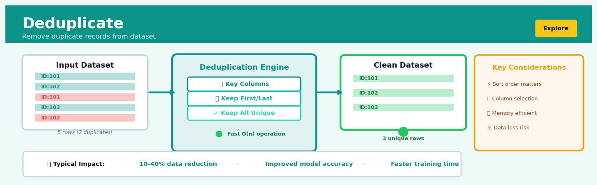
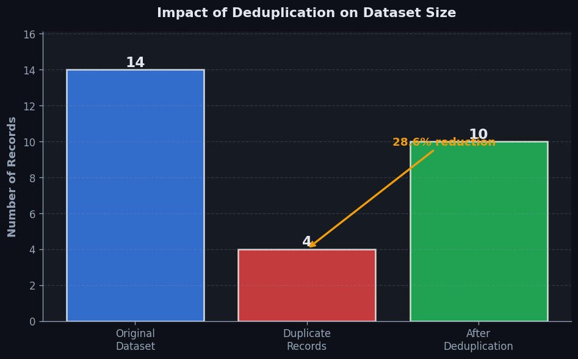
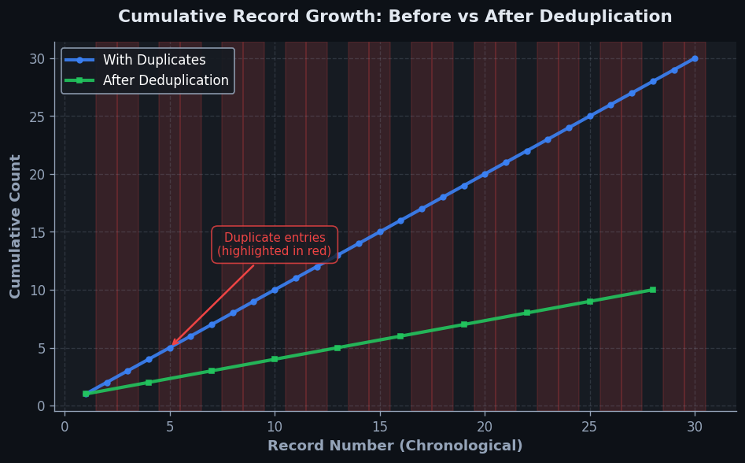

Deduplicate#


Most data scientists forget that deduplication is order-dependent: keeping the first occurrence versus the last can dramatically change your analysis when timestamps or versions matter. Always verify your duplicate detection logic on sorted data and explicitly document which record you're keeping, especially in time-series or versioned datasets where the most recent entry often contains corrected information. The silent data loss from naive deduplication has derailed more production models than I can count.
The 60-Second Version#
What it does: Deduplication finds and removes repeated records in your data so each customer, transaction, or entity appears only once.
When to use it: You suspect your dataset contains the same records multiple times—perhaps from merging sources, system errors, or repeated submissions—and this is skewing your counts, metrics, or decisions.
What you get back: A cleaned dataset with duplicates removed, plus (optionally) a report showing how many duplicates were found and which records were kept versus discarded.
Difficulty |
Easy |
Typical runtime |
Seconds on 100K rows |
What you bring |
A dataset and rules for what makes records “the same” |
What you get |
A dataset with one record per unique entity |
Heuristix bucket |
Explore — Shaping & Transforming Data |
Duplicates don’t just inflate your numbers—they systematically bias every downstream analysis, making small segments appear larger and rare events appear common.
Learning Objectives#
After reading this chapter, a business user will be able to:
Identify situations where duplicate records are inflating metrics, distorting customer counts, or creating compliance risks in your datasets.
Interpret deduplication summary reports to explain how many duplicates were found, which records were kept as masters, and what impact removal had on downstream analyses.
Decide whether to deduplicate before aggregation based on the business question at hand, distinguishing cases where duplicates represent genuine repeated events from data quality errors.
After reading this chapter, a data scientist will be able to:
Implement both exact and fuzzy deduplication workflows, including selecting appropriate matching keys, handling NULL values, and choosing master records based on data quality indicators.
Configure similarity thresholds and matching algorithms by evaluating the precision-recall trade-off between falsely merging distinct entities and leaving true duplicates unresolved.
Validate deduplication results by sampling matched record pairs, measuring retention rates across key segments, and detecting cases where legitimate entity variation was incorrectly collapsed.
Overview#
Deduplication is a data transformation technique that identifies and removes duplicate records from a dataset, ensuring that each logical entity appears exactly once in the resulting output. This operation belongs to the family of data cleaning and shaping methods, serving as a foundational preprocessing step that enforces data integrity and prevents analytical bias caused by repeated observations. Deduplication can operate as exact matching (where records must be identical across specified columns) or as fuzzy matching (where records are considered duplicates if they are “sufficiently similar” according to defined criteria).
When to Use This#
Use this when you have transaction data that may have been recorded multiple times due to system retries or integration failures, and you need to ensure each transaction is counted exactly once for accurate revenue reporting.
Use this when consolidating customer records from multiple source systems (CRM, billing, support tickets) where the same customer may appear under slightly different names or identifiers.
Use this when preparing training data for machine learning models, where duplicate records would artificially inflate the weight of certain observations and bias the learned parameters.
Use this when ingesting data from external vendors or partners where quality controls may be inconsistent and duplicate submissions are common.
Use this when your dataset has been created through union operations that may have introduced overlapping records from different time periods or data extracts.
Use this when performing cohort analysis or customer segmentation, where counting the same entity multiple times would distort segment sizes and characteristics.
Do NOT use this when the apparent duplicates represent legitimate repeated events (e.g., a customer making two identical purchases on the same day is likely two real transactions, not a duplicate).
Do NOT use this when the duplicate key columns do not uniquely identify a logical entity — you may accidentally merge records that should remain separate.
Do NOT use this when you need to preserve an audit trail of all data received, including duplicates — consider flagging duplicates instead of removing them.
Do NOT use this when the “duplicate” records contain meaningful variation in non-key columns that should be preserved or reconciled rather than arbitrarily discarded.
Questions This Answers#
Data Quality and Trust#
Are we accidentally counting the same customer multiple times in our revenue reports?
Why are we seeing 47,000 customer records but our CRM team says we only have 32,000 active accounts?
How many of these survey responses are from the same person submitting multiple times?
Is our email campaign reaching 100,000 unique people or are we spamming the same customers because they’re in our list three times?
Which of these vendor invoices are duplicates that we might pay twice if we’re not careful?
Analytics and Decision Accuracy#
Are our customer lifetime value calculations inflated because we’re treating one customer as three different people?
Is our 23% conversion rate real, or are we counting the same conversions multiple times?
Why does our inventory system show we ordered 500 units last month but the warehouse only received 350?
Are we making bad hiring decisions because the same candidate appears in our applicant pool under slightly different names or email addresses?
How much of our marketing budget is wasted sending the same catalog to the same household four times under different name variations?
Operational Efficiency#
Can we actually trust this list of 12,000 leads our sales team is supposed to follow up on, or are half of them duplicates?
Are we maintaining separate customer support tickets for the same issue because the customer contacted us through different channels?
Should we clean our contact database before the next product launch, or will we end up with the same mess we had last quarter when customers complained about getting five identical emails?
How many hours is our team wasting manually checking if this new customer already exists in our system under a different spelling?
How It Works#
Imagine you’re organizing a charity fundraiser and volunteers are collecting pledge forms at three different entrances. At the end of the day, you dump all 300 forms into one box to tally donations. As you sort through them, you notice something frustrating: Margaret Chen signed a pledge form at the north entrance for \(100, then her friend dragged her to the south entrance where she filled out another identical form, and later that evening she absent-mindedly completed a third form at the volunteer booth. If you simply add up all the forms, you'll count Margaret's \)100 donation three times, inflating your total and sending three thank-you letters to the same address. What you really need is to recognize that these three forms represent one person making one pledge, keep just one copy, and set the duplicates aside.
BEFORE DEDUPLICATION AFTER DEDUPLICATION
┌──────┬────────┬────────┐ ┌──────┬────────┬────────┐
│ Name │ Email │ Amount │ │ Name │ Email │ Amount │
├──────┼────────┼────────┤ ├──────┼────────┼────────┤
│ Chen │ m@c.io │ $100 │ │ Chen │ m@c.io │ $100 │ ← kept
│ Patel│ r@p.co │ $50 │ │ Patel│ r@p.co │ $50 │ ← kept
│ Chen │ m@c.io │ $100 │ ─┐ │ Kim │ j@k.me │ $75 │ ← kept
│ Kim │ j@k.me │ $75 │ │ └──────┴────────┴────────┘
│ Chen │ m@c.io │ $100 │ ─┤
│ Patel│ r@p.co │ $50 │ ─┘ Duplicates removed:
└──────┴────────┴────────┘ 3 records → unique records
6 rows total 3 rows remain
Step 1: Choose your identity criteria. First, you decide which columns define “the same person” or “the same thing.” For customer records, this might be email address. For product listings, it could be SKU number. For transaction logs, perhaps a combination of timestamp, user ID, and action type. This choice determines what counts as a duplicate.
Step 2: Scan through the dataset row by row. The algorithm reads your first record and essentially asks, “Have I seen this combination of identity values before?” Since it’s the first record, the answer is no, so it keeps this record and adds those identity values to its memory.
Step 3: Compare each new record against what’s been seen. When the algorithm encounters the second record, it checks whether this combination of identity values matches anything in memory. If it’s new, the record is kept and added to memory. If it matches something already seen, it’s flagged as a duplicate.
Step 4: Decide what to do with duplicates. You have options here. The most common approach is simply removing duplicate rows entirely, keeping only the first occurrence. Alternatively, you might keep the most recent version, or aggregate duplicates by counting how many times each unique entity appeared.
Step 5: Output the cleaned dataset. The result is a dataset where each unique combination of identity values appears exactly once. If you started with 10,000 records and 3,000 were duplicates, you now have 7,000 clean, unique records ready for analysis.
The key insight: Deduplication works because most datasets have a natural notion of identity—once you define what makes two records “the same thing,” you can systematically recognize and collapse repetitions, preventing double-counting and ensuring every real-world entity is represented exactly once.
The Intuition#
Imagine you are organising a guest list for a corporate event. You have received RSVPs from multiple channels: email responses, phone confirmations, and an online form. When you compile these lists, you notice that “Robert Smith” appears in the email list, “Bob Smith” appears in the phone list, and “R. Smith” appears in the online form — all with the same company email domain. These are almost certainly the same person, yet they appear as three separate entries. If you send three invitations and order three meals, you waste resources and create an awkward situation. Deduplication is the systematic process of identifying that these three records represent a single guest and consolidating them into one canonical record.
The challenge lies in defining what makes two records “the same.” In the simplest case — exact deduplication — records must match perfectly across all specified columns. This is computationally straightforward but brittle: a single extra space, a capitalisation difference, or a typo will cause genuinely duplicate records to be treated as distinct. In practice, data rarely arrives in such pristine form. This is why deduplication often involves normalisation (standardising case, removing whitespace, formatting dates consistently) before comparison, or employs similarity measures that can tolerate minor variations.
The keep strategy is equally important as the matching logic. When duplicates are found, which record should be retained? The first encountered? The last? The one with the most complete data? The most recent timestamp? There is no universally correct answer — it depends entirely on the business context. A financial reconciliation might require keeping the earliest record (the original transaction), while a customer profile update might require keeping the latest record (the most current information). Understanding this choice is essential: deduplication is not merely a technical operation but a business decision about which version of reality to preserve.
The Mathematics#
Formal Problem Setup#
Let \(\mathcal{D} = \{r_1, r_2, \ldots, r_n\}\) be a dataset of \(n\) records, where each record \(r_i\) is a tuple of \(m\) attribute values:
Let \(K \subseteq \{1, 2, \ldots, m\}\) be the set of column indices designated as the duplicate key. Define the projection of record \(r_i\) onto the key columns as:
Exact Deduplication#
For exact deduplication, two records \(r_i\) and \(r_j\) are considered duplicates if and only if their key projections are identical:
This induces an equivalence relation \(\sim\) on \(\mathcal{D}\), partitioning the dataset into equivalence classes:
The deduplicated dataset \(\mathcal{D}'\) contains exactly one representative from each equivalence class:
where \(\text{select}(\cdot)\) is a selection function determined by the keep strategy.
Selection Functions#
Let \([r] = \{r_{i_1}, r_{i_2}, \ldots, r_{i_k}\}\) be an equivalence class with \(k\) duplicate records, indexed by their position in the original dataset where \(i_1 < i_2 < \cdots < i_k\). Common selection functions include:
Keep First:
Keep Last:
Keep by Maximum of Column \(c\):
Fuzzy Deduplication#
When exact matching is insufficient, we introduce a similarity function \(s: \mathcal{R} \times \mathcal{R} \to [0, 1]\) and a threshold \(\tau \in [0, 1]\):
For string attributes, common similarity measures include:
Levenshtein Similarity:
where \(d_{\text{Lev}}(u, v)\) is the Levenshtein edit distance — the minimum number of single-character insertions, deletions, or substitutions to transform \(u\) into \(v\).
Jaro-Winkler Similarity:
where \(s_J\) is the Jaro similarity, \(\ell\) is the length of the common prefix (up to 4 characters), and \(p = 0.1\) is a scaling factor.
Computational Complexity#
Naive pairwise comparison has complexity \(O(n^2)\), which becomes prohibitive for large datasets. For exact deduplication on discrete key columns, hash-based grouping reduces this to \(O(n)\) expected time. For fuzzy deduplication, blocking or indexing strategies (e.g., sorted neighbourhood, canopy clustering) reduce the comparison space to \(O(n \cdot b)\) where \(b\) is the average block size.
Assumptions and Edge Cases#
Transitivity assumption: In fuzzy matching, if \(A \sim B\) and \(B \sim C\), we assume \(A \sim C\). This may not hold for similarity-based matching (similarity is not generally transitive).
Null handling: Records with null values in key columns require explicit policy — treat nulls as equal to each other, or as equal to nothing?
Ordering stability: The selection function may depend on record order; if the input order is non-deterministic, results may vary between runs.
Degenerate case — all duplicates: If all records have identical keys, the output contains exactly one record.
Degenerate case — no duplicates: If all records have distinct keys, the output equals the input (modulo ordering).
Understanding the Mathematics#
Exact Deduplication as Set Operations#
The equation: $\(D_{\text{unique}} = \{r \in D : \nexists r' \in D \setminus \{r\} \text{ such that } r[K] = r'[K]\}\)$
Read it aloud: “The deduplicated dataset contains all records from the original dataset where there does not exist any other record in the dataset (excluding the record itself) that has identical values across all key columns.”
What each symbol means:
\(D_{\text{unique}}\) = the deduplicated output dataset
\(D\) = the original dataset with possible duplicates
\(r\) = a single record (row) in the dataset
\(\in\) = “is a member of” or “belongs to”
\(\nexists\) = “there does not exist”
\(r'\) = another record we’re comparing against
\(D \setminus \{r\}\) = all records in the dataset except \(r\) itself
\(K\) = the set of key columns we’re checking for duplicates
\(r[K]\) = the values of record \(r\) in the key columns
A concrete numerical example: Suppose you have a customer dataset \(D\) with email as the key column \(K\). You have four records: Alice (alice@email.com), Bob (bob@email.com), Carol (alice@email.com), and David (david@email.com). For Alice’s record, we check: does any other record share alice@email.com? Yes—Carol’s record does. So Alice’s record is excluded. For Bob’s record: does any other record have bob@email.com? No. Bob stays. For Carol’s record (alice@email.com): since Alice was already excluded and no remaining records match, Carol stays. David stays because david@email.com is unique among remaining records.
Why this equation matters: This equation formally defines which records survive deduplication, ensuring we don’t accidentally count the same customer twice when calculating revenue or sending marketing emails.
Similarity Score for Fuzzy Deduplication#
The equation: $\(\text{sim}(r_i, r_j) = \sum_{k \in K} w_k \cdot s_k(r_i[k], r_j[k])\)$
Read it aloud: “The similarity between two records equals the sum across all key columns of each column’s weight multiplied by the column-specific similarity score for that field.”
What each symbol means:
\(\text{sim}(r_i, r_j)\) = overall similarity score between record \(i\) and record \(j\)
\(\sum\) = sum across all columns
\(k\) = a specific column in the key set
\(K\) = the set of columns we’re comparing
\(w_k\) = the importance weight for column \(k\)
\(s_k\) = the similarity function for column \(k\) (returns a value between 0 and 1)
\(r_i[k]\) = the value in record \(i\) for column \(k\)
A concrete numerical example: You’re matching business names and addresses. For two records (“Acme Corp” / “123 Main St”) and (“Acme Corporation” / “123 Main Street”), you assign weight 0.6 to name and 0.4 to address. The name similarity is 0.85 (high but not perfect). The address similarity is 0.90 (abbreviation difference). The total similarity = (0.6 × 0.85) + (0.4 × 0.90) = 0.51 + 0.36 = 0.87.
Why this equation matters: Real-world data is messy—people abbreviate, misspell, or format things differently—and this equation lets us find duplicates even when records aren’t character-for-character identical.
Levenshtein Distance#
The equation: $\(d(i,j) = \min \begin{cases} d(i-1, j) + 1 & \text{(deletion)} \\ d(i, j-1) + 1 & \text{(insertion)} \\ d(i-1, j-1) + \mathbb{1}_{s_i \neq t_j} & \text{(substitution)} \end{cases}\)$
Read it aloud: “The edit distance between the first \(i\) characters of string \(s\) and the first \(j\) characters of string \(t\) is the minimum of three options: the distance if we delete from \(s\), the distance if we insert into \(s\), or the distance if we substitute—adding one if the characters differ.”
What each symbol means:
\(d(i,j)\) = minimum edits needed to transform first \(i\) characters of \(s\) into first \(j\) characters of \(t\)
\(\min\) = take the smallest value among the options
\(d(i-1, j) + 1\) = delete character \(i\) from \(s\), then solve remaining problem
\(d(i, j-1) + 1\) = insert a character, then solve remaining problem
\(d(i-1, j-1) + \mathbb{1}_{s_i \neq t_j}\) = align characters; add 1 if they don’t match
\(\mathbb{1}_{s_i \neq t_j}\) = indicator function: equals 1 if characters differ, 0 if identical
A concrete numerical example: Compare “Smith” to “Smyth”. Starting from the beginning: S=S (0 edits), m=m (0 edits), i≠y (1 substitution needed), t=t (0 edits), h=h (0 edits). Total distance = 1 edit needed. If your threshold is 2 edits for a 5-letter name, these records would be flagged as likely duplicates.
Why this equation matters: This calculates how “close” two strings are, letting us catch typos and variations that would slip past exact matching—critical when people enter their own names or addresses manually.
The Big Picture#
The mathematics of deduplication balances precision with flexibility. Exact matching uses set theory to give us crisp, unambiguous rules: a record survives if no other record matches it exactly. Fuzzy matching adds weighted similarity scores and edit distances because real data doesn’t cooperate with exact rules—humans misspell, abbreviate, and reformat constantly. We use Levenshtein distance specifically because it mirrors how data entry errors actually happen: typos are usually one or two character changes, not complete rewrites. The mathematical essence boils down to this: we’re measuring how “same” two records are, using either a yes/no answer (exact) or a numerical score (fuzzy), then keeping just one representative from each group of “same enough” records.
Python Implementation#
import pandas as pd
import numpy as np
from typing import Literal
# =============================================================================
# Example 1: Exact Deduplication with pandas
# =============================================================================
# Create a realistic dataset with duplicate customer records
np.random.seed(42)
data = {
'customer_id': [101, 102, 101, 103, 102, 104, 101],
'name': ['Alice Chen', 'Bob Smith', 'Alice Chen', 'Carol White',
'Bob Smith', 'David Brown', 'Alice Chen'],
'email': ['alice@example.com', 'bob@example.com', 'alice@example.com',
'carol@example.com', 'bob@example.com', 'david@example.com',
'alice@example.com'],
'last_purchase_date': ['2024-01-15', '2024-01-16', '2024-02-20',
'2024-01-17', '2024-03-01', '2024-01-18', '2024-03-15'],
'total_spend': [150.00, 200.00, 175.00, 300.00, 225.00, 180.00, 190.00]
}
df = pd.DataFrame(data)
df['last_purchase_date'] = pd.to_datetime(df['last_purchase_date'])
print("Original dataset:")
print(df)
print(f"\nOriginal row count: {len(df)}")
# Deduplicate keeping the FIRST occurrence
df_first = df.drop_duplicates(subset=['customer_id'], keep='first')
print("\n--- Deduplicated (keep='first') ---")
print(df_first)
print(f"Rows after deduplication: {len(df_first)}")
# Deduplicate keeping the LAST occurrence (most recent record)
df_last = df.drop_duplicates(subset=['customer_id'], keep='last')
print("\n--- Deduplicated (keep='last') ---")
print(df_last)
# Deduplicate keeping the record with maximum total_spend
# This requires sorting before deduplication
df_max_spend = (df
.sort_values('total_spend', ascending=False)
.drop_duplicates(subset=['customer_id'], keep='first')
.sort_values('customer_id'))
print("\n--- Deduplicated (keep record with highest total_spend) ---")
print(df_max_spend)
# =============================================================================
# Example 2: Deduplication with Multiple Key Columns
# =============================================================================
# Transaction data where duplicates are defined by multiple columns
transactions = pd.DataFrame({
'transaction_id': ['TXN001', 'TXN002', 'TXN001', 'TXN003', 'TXN002'],
'customer_id': [101, 102, 101, 103, 102],
'amount': [50.00, 75.00, 50.00, 100.00, 75.00],
'timestamp': pd.to_datetime(['2024-01-15 10:30:00', '2024-01-15 11:00:00',
'2024-01-15 10:30:05', '2024-01-15 12:00:00',
'2024-01-15 11:00:00'])
})
print("\n\n=== MULTI-KEY DEDUPLICATION ===")
print("Original transactions:")
print(transactions)
# Deduplicate on transaction_id AND customer_id
df_deduped = transactions.drop_duplicates(
subset=['transaction_id', 'customer_id'],
keep='first'
)
print("\nDeduplicated on [transaction_id, customer_id]:")
print(df_deduped)
# =============================================================================
# Example 3: Handling Duplicates with Aggregation (Alternative Approach)
# =============================================================================
print("\n\n=== AGGREGATION INSTEAD OF SELECTION ===")
# Sometimes we want to COMBINE duplicates rather than select one
# For example: sum the spend, take the latest date
df_aggregated = (df
.groupby('customer_id')
.agg({
'name': 'first', # Take the first name
'email': 'first', # Take the first email
'last_purchase_date': 'max', # Most recent purchase
'total_spend': 'sum' # Sum all spending
})
.reset_index())
print("Aggregated (combining duplicate records):")
print(df_aggregated)
# =============================================================================
# Example 4: Fuzzy Deduplication with String Similarity
# =============================================================================
# For fuzzy matching, we use the rapidfuzz library (or fuzzywuzzy)
# Install with: pip install rapidfuzz
try:
from rapidfuzz import fuzz
from rapidfuzz.process import cdist
# Dataset with near-duplicate names
fuzzy_data = pd.DataFrame({
'id': [1, 2, 3, 4, 5],
'company_name': [
'Acme Corporation',
'Acme Corp.',
'Acme Corp',
'Beta Industries LLC',
'Beta Industries'
],
'revenue': [1000000, 1050000, 980000, 500000, 510000]
})
print("\n\n=== FUZZY DEDUPLICATION ===")
print("Original data with near-duplicates:")
print(fuzzy_data)
# Compute pairwise similarity matrix
names = fuzzy_data['company_name'].tolist()
similarity_matrix = cdist(names, names, scorer=fuzz.ratio)
print("\nSimilarity matrix (0-100 scale):")
sim_df = pd.DataFrame(similarity_matrix, index=names, columns=names)
print(sim_df.round(0).astype(int))
# Identify duplicates with similarity >= 80
threshold = 80
visited = set()
groups = []
for i in range(len(names)):
if i in visited:
continue
group = [i]
visited.add(i)
for j in range(i + 1, len(names)):
if j not in visited and similarity_matrix[i][j] >= threshold:
group.append(j)
visited.add(j)
groups.append(group)
print(f"\nDuplicate groups (threshold={threshold}):")
for idx, group in enumerate(groups):
print(f" Group {idx + 1}: {[names[i] for i in group]}")
# Keep the record with highest revenue from each group
keep_indices = [max(group, key=lambda i: fuzzy_data.loc[i, 'revenue'])
for group in groups]
df_fuzzy_deduped = fuzzy_data.loc[keep_indices].reset_index(drop=True)
print("\nFuzzy-deduplicated result (keeping highest revenue):")
print(df_fuzzy_deduped)
except ImportError:
print("\n[Note: Install 'rapidfuzz' for fuzzy deduplication examples]")
Visualisations#


Using This in Heuristix#
Data Inputs#
The Deduplicate node accepts a single tabular dataset input. All column types are supported, though the behaviour of key columns varies:
Column Type |
Behaviour in Key Matching |
|---|---|
String |
Exact character match (case-sensitive by default) |
Numeric |
Exact value match |
Date/DateTime |
Exact timestamp match |
Boolean |
Exact value match |
Categorical |
Exact category match |
Configuration Parameters#
| Parameter | Type | Default | Description | |———–|——|———|
Config Recipes#
Recipe 1: Quick Exploration Scan#
When to use: Initial data profiling when you need to quickly understand if duplicates exist and estimate their volume before investing in deeper cleaning.
Settings:
Parameter |
Value |
Why |
|---|---|---|
|
|
Fastest comparison method |
|
|
Minimal column set to maximize speed |
|
|
Default behavior, no sorting overhead |
|
|
Catches common data entry variations |
|
|
Skip integrity checks to save time |
What you get: A rough duplicate count and cleaned dataset in seconds, suitable for exploratory analysis where precision isn’t critical yet.
Trade-off: You miss near-duplicates and may retain records that should be merged if multiple columns define true uniqueness.
Recipe 2: Production-Grade Exact Deduplication#
When to use: Final data pipeline stage before model training or reporting, where data quality directly impacts business decisions or model performance.
Settings:
Parameter |
Value |
Why |
|---|---|---|
|
|
Deterministic, auditable results |
|
All business key fields |
Complete logical uniqueness definition |
|
|
Preserves most recent data version |
|
|
Ensures chronological precedence |
|
|
Respects actual data distinctions |
|
|
Catches configuration errors early |
|
|
Full audit trail for compliance |
What you get: Deterministic, reproducible deduplication with complete lineage tracking and guaranteed single representation per entity.
Trade-off: Slower execution and requires careful definition of business keys; won’t catch typos or data entry errors that create near-duplicates.
Recipe 3: Fuzzy Customer Record Matching#
When to use: Merging customer databases from multiple sources where name/address spelling variations create duplicates that exact matching misses.
Settings:
Parameter |
Value |
Why |
|---|---|---|
|
|
Handles spelling variations |
|
|
Identity fields prone to variation |
|
|
Balanced precision-recall for names |
|
|
Good for typos and transpositions |
|
|
Reduces comparison space dramatically |
|
|
Retains record with fewest nulls |
What you get: Merged records that humans would consider identical despite minor data entry differences, with 10-100x faster execution via blocking.
Trade-off: Requires manual threshold tuning and may incorrectly merge distinct entities with similar names in the same geographic area.
Recipe 4: Time-Series Event Deduplication#
When to use: Cleaning sensor data, API logs, or event streams where the same event gets recorded multiple times due to retries or system glitches.
Settings:
Parameter |
Value |
Why |
|---|---|---|
|
|
Events are identical when duplicated |
|
|
Logical event identity |
|
|
Only consider 5-minute window |
|
|
Original event is authoritative |
|
|
Ensures temporal consistency |
What you get: Clean event stream with duplicate transmissions removed while preserving legitimate repeated events outside the time window.
Trade-off: Requires domain knowledge to set appropriate time window; too narrow misses duplicates, too wide removes legitimate repeated events.
Business Applications#
Financial Services
A mid-sized UK mortgage lender processing 15,000 applications monthly discovered that 8–12% of applicants submitted multiple applications across different brokers, creating duplicate credit checks and inflating their risk models. By deduplicating applicant records using fuzzy matching on name, date of birth, and address fields, the lender eliminated double-counting in their portfolio risk calculations and reduced unnecessary credit bureau queries by 1,847 checks per month, saving £27,600 annually in bureau fees while improving applicant experience through faster processing.
Retail
An e-commerce retailer with 2.3M SKUs across twelve countries faced a product master data crisis: the same physical item appeared 4–7 times in their catalog due to regional uploads, supplier feeds, and legacy migrations. Deduplication using product codes, dimensions, and image hashing consolidated their catalog to 890,000 unique products, cutting warehouse picking errors by 41% and reducing customer complaints about “receiving the wrong variant” by 68%. The cleanup also revealed $2.1M in dead inventory previously hidden across duplicate records.
Healthcare
A regional hospital network serving 340,000 patients struggled with patient matching across their emergency departments, specialty clinics, and imaging centers—the same patient might have five different medical record numbers. Implementing probabilistic deduplication on patient demographics reduced duplicate records from 11.2% to 1.8% of the database, directly preventing 23 medication errors in the first six months and cutting administrative time spent on record reconciliation from 4 days per week to 20 minutes, freeing two FTE positions for clinical support roles.
Insurance
A property and casualty insurer discovered that 6% of homeowners policies were duplicates created when customers switched agents or updated coverage online while a paper renewal was in-flight. These duplicates triggered double-billing incidents, erroneous cancellations, and claims confusion. Deduplicating on policy address, insured name, and coverage dates eliminated 14,200 duplicate policies, reduced billing disputes by 89%, and prevented an estimated $840,000 in claim overpayments where the same loss was filed under both policy numbers.
Manufacturing
A European automotive parts manufacturer maintaining vendor data across SAP, procurement systems, and quality databases had the same supplier listed up to 19 times with variations in company name spelling, address formats, and contact details. Deduplicating their 47,000-record vendor master file down to 8,100 unique suppliers revealed that their “top 500 suppliers” were actually only 312 distinct companies, completely reshaping their procurement strategy and enabling them to negotiate consolidated volume discounts worth €1.8M annually.
Logistics
A last-mile delivery company processing 280,000 parcels daily found that address inconsistencies—“Flat 2” versus “Apartment 2”, “St.” versus “Street”—created duplicate delivery points, splitting package volumes and preventing route optimization. Fuzzy deduplication on normalized addresses consolidated their delivery database by 17%, allowing route planning algorithms to batch 34% more parcels per stop and reducing driver miles by 127,000 km monthly, cutting fuel costs by £89,000.
Marketing
A B2B SaaS company with 890,000 email subscribers discovered their CRM contained the same prospects entered from trade shows, web forms, content downloads, and sales uploads—some individuals appeared 11 times. Deduplicating contacts before a major product launch campaign reduced their email list to 420,000 unique individuals, lifting click-through rates from 1.8% to 3.1% by eliminating subscriber fatigue and saving $14,700 in email platform costs based on contact-volume pricing.
Telecommunications
A mobile network operator analyzing network performance complaints found that the same dropped-call incident was being logged by both their automated monitoring system and customer service tickets, artificially inflating problem severity. Deduplicating network events using cell tower ID, timestamp (±2 minutes), and customer account information reduced their critical incident queue by 52%, allowing engineers to focus on genuinely distinct problems and improving mean-time-to-resolution from 8.3 hours to 3.1 hours.
Public Sector
A metropolitan transit authority reconciling fare evasion citations across bus, metro, and tram systems discovered that 22% of their “repeat offenders” were actually duplicate records caused by inconsistent inspector data entry. Deduplicating citations by name and date reduced their prosecution workload by 3,200 cases annually, freeing legal staff while ensuring genuine repeat offenders faced appropriate penalties rather than first-time riders being incorrectly flagged.
Worked Example#
Sarah Chen, a senior data analyst at Helix Pharma, was reviewing her calendar when she saw the meeting invite: “Q1 Patient Enrollment Review – URGENT.” The clinical trials team had a problem. They were reporting 847 patients enrolled in their new diabetes medication trial, but the finance team’s invoice records showed only 731 unique patient visits. Someone was concerned about billing fraud. Sarah’s director needed answers before the afternoon board meeting.
She pulled the patient enrollment data from the trial management system. The dataset looked straightforward at first—patient IDs, names, enrollment dates, and site locations—but within minutes she spotted the mess. Patient “John Smith” appeared three times with slightly different spellings. Some records used middle initials, others didn’t. One patient had been transferred between trial sites and appeared to have two enrollment dates. This wasn’t fraud; it was data entry chaos across twelve different clinical sites, each with their own intake staff and procedures.
PatientID |
FirstName |
LastName |
EnrollmentDate |
TrialSite |
|---|---|---|---|---|
P-1047 |
John |
Smith |
2024-01-15 |
Boston Medical |
P-1092 |
John |
Smith |
2024-01-15 |
Boston Medical |
P-1103 |
J. |
Smith |
2024-01-16 |
Boston Medical |
P-1156 |
Maria |
Rodriguez |
2024-01-18 |
Austin Research |
P-1157 |
Maria |
Rodriguez |
2024-01-18 |
Denver Clinic |
Sarah opened her workflow and added a Deduplicate node. Her first instinct was to use PatientID as the deduplication key—it should be unique by design. But she caught herself. If data entry was this inconsistent, could she trust that IDs were assigned correctly? She decided on a composite approach: deduplicate first by the combination of FirstName, LastName, and EnrollmentDate. Patients enrolling on the same day with the same name were almost certainly duplicates. She configured the node to keep the first occurrence and mark the others as duplicates rather than deleting them—the compliance team would want an audit trail.
She ran the deduplication. The results appeared immediately:
Total records: 847
Unique records: 738
Duplicates removed: 109
Deduplication keys: FirstName, LastName, EnrollmentDate
Sarah exported the duplicate records to a separate file and sorted by frequency. Thirty-seven patients appeared exactly twice—likely clerical errors where intake coordinators submitted the same enrollment form multiple times. But she found something else: seven patients who appeared at multiple trial sites on the same day. That was impossible. She flagged those records and pulled up the source intake forms. Within twenty minutes, she discovered that the Boston site had accidentally uploaded their January 15th enrollment batch twice, once to their own site code and once to Chicago’s. A simple configuration error, not fraud.
Here’s the Python script Sarah used to validate her findings:
import pandas as pd
# Load patient enrollment data
df = pd.read_csv('patient_enrollments.csv')
# Sarah's approach: mark duplicates but keep for audit
df['is_duplicate'] = df.duplicated(
subset=['FirstName', 'LastName', 'EnrollmentDate'],
keep='first'
)
# Count summary statistics
total_records = len(df)
unique_records = len(df[~df['is_duplicate']])
duplicate_count = len(df[df['is_duplicate']])
print(f"Total records: {total_records}")
print(f"Unique records: {unique_records}")
print(f"Duplicates found: {duplicate_count}")
# Identify high-frequency duplicates for investigation
duplicate_groups = df[df['is_duplicate']].groupby(
['FirstName', 'LastName', 'EnrollmentDate']
).size().sort_values(ascending=False)
print("\nTop duplicate groups:")
print(duplicate_groups.head(10))
# Flag suspicious cross-site enrollments
suspicious = df.groupby(['FirstName', 'LastName', 'EnrollmentDate']
)['TrialSite'].nunique()
multi_site = suspicious[suspicious > 1]
print(f"\nSuspicious multi-site enrollments: {len(multi_site)}")
The insight wasn’t just about removing duplicates—it was discovering why they existed. The true enrollment count was 738, close to finance’s 731 (the difference was timing; some invoices were pending). More importantly, Sarah had uncovered a systemic data quality issue. The trial sites had no validation preventing duplicate submissions, and the site assignment dropdown in the enrollment system was confusingly designed.
That afternoon, Sarah presented her findings to the board. No fraud, just operational chaos. The CFO was relieved. The VP of Clinical Operations was less thrilled but committed to implementing validation rules in the enrollment system and retraining site coordinators. Finance and clinical ops agreed to implement a weekly automated reconciliation report using Sarah’s deduplication logic.
If Sarah could do it again, she’d have spent more time on the fuzzy matching problem. “J. Smith” and “John Smith” were probably the same person, but her exact-match approach missed those. For the next trial, she planned to implement phonetic matching and address-based validation. But for today’s crisis, she’d found the signal in the noise—and potentially saved the company from a painful audit.
Interpreting Your Results#
You’ve just run deduplication and you’re looking at a screen full of numbers. Here’s exactly what each piece is telling you and what to do about it.
Duplicate Count and Removal Rate#
Plain-English meaning: The duplicate count tells you how many rows were removed from your dataset. The removal rate is that count divided by your original row count, expressed as a percentage. If you started with 10,000 rows and removed 2,500 duplicates, your removal rate is 25%.
Concrete benchmarks:
Below 5%: Normal for well-maintained transactional databases or previously cleaned datasets. This is what you’d expect from CRM exports or internal analytics tables.
5–20%: Typical for event logs, web analytics data, or systems that track repeated user actions. Nothing alarming here.
20–50%: Common in marketing databases, survey responses with re-submissions, or merged data from multiple sources. Expected but requires documentation.
Above 50%: Red flag territory. Either your data source has serious quality issues, or you’re deduplicating on too few columns and accidentally removing legitimate variation.
Red flags: If you’re removing more than 30% of records and your deduplication key includes date/timestamp fields, you’re likely collapsing time-series data inappropriately. If removal rate is under 1% but you know duplicates exist, your matching criteria are too strict.
Duplicate Group Distribution#
Plain-English meaning: This chart shows how many times each duplicate appears. You might see “2,000 records appeared exactly twice, 300 appeared three times, 50 appeared four times.” This tells you whether you have simple duplicates (mostly pairs) or pathological repetition (the same record appearing dozens of times).
Concrete benchmarks:
Healthy pattern: 80%+ of duplicates appear exactly twice, with exponentially fewer appearing 3, 4, 5+ times. This indicates simple data entry errors or two-system overlaps.
Concerning pattern: Significant clusters at specific repeat counts (e.g., many records appearing exactly 12 times) suggest systematic issues like monthly batch loads without deduplication.
Critical pattern: Records appearing 50+ times, or a flat distribution across repeat counts, indicates broken data pipelines or logging systems stuck in loops.
Red flags: If you see records appearing exactly 7, 14, or 30 times, investigate date-based processing issues (weekly/monthly jobs running repeatedly). If one record appears 1000+ times while others appear 2-3 times, you’ve found either a test record, a default/null value being treated as valid data, or a critical system failure.
Columns with High Duplication Contribution#
Plain-English meaning: If you deduplicated on multiple columns (e.g., email, phone, address), this shows which columns most strongly identify duplicates. A column with 95% contribution means that 95% of identified duplicates matched on that field specifically.
Red flags: If a column has 100% contribution but you included multiple fields, the other fields aren’t adding value—you’re wasting computational resources and potentially missing legitimate records that differ only on those ignored fields. If your primary key (like customer_id) shows under 70% contribution, you have a data integrity problem: different entities are sharing IDs.
Reading Multiple Outputs Together#
A removal rate of 35% combined with mostly pair-wise duplicates (appearing exactly twice) suggests a one-time data merge issue—probably fixable upstream. But 35% removal with records appearing 10+ times indicates an ongoing systemic problem requiring immediate attention.
Low duplicate count but high contribution from one column means you’re dealing with sparse, high-quality data where only one field matters for identity. High duplicate count with evenly distributed contribution across columns suggests comprehensive data quality issues.
Sanity Check Checklist#
Row count math: Original rows minus duplicates removed equals your new row count exactly?
Key field check: Do your deduplication columns actually identify unique entities in your business context?
Spot check survivors: Manually inspect 10 random kept records—are they truly unique?
Spot check removed: Look at 10 removed records—were they genuinely duplicates of kept records?
Downstream impact: Will removing this percentage of records break any counts, totals, or aggregations that downstream users expect?
Good Enough to Act On?#
If your removal rate falls within expected ranges for your data source type, your duplicate groups show exponential decay (mostly pairs, few triplets, rare higher multiples), and your spot checks confirm both kept and removed records are correctly classified, you’re good to proceed. The moment to stop analyzing is when you can articulate why duplicates exist at the rate you’re seeing and confirm the pattern matches your explanation. If you can’t explain the numbers, don’t trust the deduplication.
Decision Guidance#
What This Result Is Telling You#
When deduplication reveals that 15% of your customer records are duplicates, you’re looking at a data quality issue that directly impacts revenue and costs. Each duplicate customer record means your marketing team may be sending multiple catalogs to the same household, your sales team may be splitting their attention across what they think are multiple prospects, and your analytics team is calculating customer lifetime value on inflated counts. This isn’t just a technical cleanup—it’s a correction to the fundamental understanding of how many actual customers you serve and how much each one is worth to your business.
The magnitude of duplication discovered tells you where your data collection processes are breaking down. High duplication rates in leads often indicate multiple entry points without proper validation—trade shows, web forms, and partner referrals all creating their own records. Moderate duplication in transactional systems suggests weak matching logic at point of sale. Even low duplication rates (2-5%) can significantly distort critical metrics like customer acquisition cost and retention rates when you’re making million-dollar budget decisions based on those numbers.
The pattern of which fields drive duplication reveals operational gaps. If you’re matching mostly on email addresses, your B2B contacts using personal emails are slipping through. If names and addresses are your primary duplicate drivers, you’re likely missing the same person across multiple locations or using outdated information. These patterns point directly to where process improvements will yield the highest return.
Decision Points#
If you see this… |
It means… |
Recommended action |
Who acts on this |
|---|---|---|---|
>20% exact duplicates in customer master data |
Critical data quality failure; multiple systems or lack of entry validation |
Halt segmentation and targeting campaigns; initiate data governance review and implement master data management |
VP of Operations + Marketing Operations Lead |
5-10% fuzzy matches (80-95% similarity) on contact records |
Normal data decay and variation in entry; manageable with routine cleanup |
Schedule quarterly deduplication; implement real-time fuzzy matching at data entry points |
Data Engineering Team + CRM Administrator |
<2% duplicates in transaction records |
Healthy operational discipline; acceptable baseline noise |
Continue current processes; maintain monitoring dashboard |
Data Quality Analyst (routine monitoring) |
Spike in duplication rate (>5 percentage points increase month-over-month) |
New data source, system integration, or process breakdown introduced recently |
Immediate investigation of data sources added in past 60 days; quarantine suspect records |
IT Operations + Data Governance Lead |
>30% of duplicates concentrated in specific segments (geography, product line, channel) |
Localized process failure or system integration issue in that area |
Audit data collection processes specific to that segment; may indicate rogue spreadsheet imports or broken API |
Segment Owner + Regional Operations Manager |
When to Proceed vs. Investigate Further#
Proceed with confidence when:
Duplicate rate is <3% on critical business entities (customers, products, vendors)
Deduplication rules have been validated against 100+ known duplicate pairs with >95% accuracy
Stakeholders have reviewed and approved the merge/purge strategy for records flagged as duplicates
You have a rollback plan and archived original records before any deletion
Proceed with caution when:
Duplicate rate is 3-8% (indicates manageable issues but requires monitoring)
Fuzzy matching confidence scores fall in 75-85% range (manual review recommended for borderline cases)
Deduplication affects >10% of records used in active campaigns or reporting
Investigate before acting when:
Duplicate rate exceeds 15% (suggests systemic issues requiring root cause analysis)
Different deduplication methods yield significantly different results (>10% variation in duplicate count)
Key stakeholders dispute whether flagged records are truly duplicates
Do not use these results yet when:
Deduplication rules haven’t been tested against known ground truth examples
Source data is still actively changing or being migrated
You cannot explain to business users why two records were marked as duplicates
The Cost of Getting This Wrong#
A retail company once proceeded with aggressive deduplication based purely on email matching, merging records for a father and son who shared a family email address. The merged record showed contradictory purchase behavior—baby products and retirement planning books—leading the analytics team to exclude it as an outlier. Marketing automation then suppressed both individuals from targeted campaigns because the combined profile matched no viable segment. The company lost two active customers while simultaneously undercounting their customer base by thousands of similar households, leading to a 12% overestimate of customer lifetime value that justified excessive acquisition spending for nine months. When discovered, the CFO had to restate projected revenues, the marketing budget was slashed mid-quarter, and three planned store openings were delayed. The technical team spent six months unwinding merges and rebuilding trust in the customer database, during which no major analytical initiatives could proceed.
Common Pitfalls#
The Vanishing Customer Problem
Here’s what happened: A marketing analyst was preparing a customer lifetime value report for an e-commerce company. They deduplicated their customer table by email address to remove “duplicate accounts.” The output showed 230,000 unique customers instead of the previous 280,000. They concluded their database had significant data quality issues and presented the cleaned dataset to leadership. Three months later, revenue reconciliation revealed a $4.2M discrepancy—families sharing email addresses (parents and adult children, roommates, spouses) had been collapsed into single customer records, completely erasing distinct purchasing behaviors and preferences.
Why it happens: Business users assume deduplication always improves data quality without considering that apparent duplicates may represent genuinely distinct entities that happen to share attributes. The cognitive trap is “tidiness bias”—believing cleaner-looking numbers are automatically more accurate.
How to detect it: Compare aggregate revenue before and after deduplication. If post-deduplication revenue-per-customer increases dramatically (in this case, from \(180 to \)220 average order value) while total transaction counts drop proportionally to record reduction, you’ve likely merged distinct entities. Check the distribution of records-per-key: if you’re seeing 2-5 records per email consistently, that’s a red flag for legitimate sharing patterns.
The fix: Use composite keys that include behavioral signals (shipping addresses, payment methods, device fingerprints) rather than relying on single identifiers that may legitimately overlap across distinct entities.
The Timestamp Trap
Here’s what happened: A junior data scientist was deduplicating sensor readings from IoT devices, matching on device_id and timestamp. They assumed any records with identical device_id and timestamp were duplicates from redundant data pipelines. The output showed 15% fewer records. They concluded their ETL process had significant duplication issues. Production systems that relied on this data began showing equipment failures hours after they actually occurred—the “duplicates” were actually legitimate rapid-fire state changes (device switching from idle→active→error within the same second) that the deduplication had erased.
Why it happens: Insufficient understanding of data generation processes and timestamp precision. The assumption that high-frequency events are impossible leads to treating genuine signal as noise.
How to detect it: Examine the removed records specifically—don’t just count them. If deduplicated records show different values in non-key columns (status_code, temperature_reading, error_flags), they weren’t actually duplicates. Calculate the time distribution between consecutive events: if you’re seeing sub-second or same-second intervals in the original data, verify with source system owners whether this is expected behavior.
The fix: Include relevant payload fields in your uniqueness criteria, or use fuzzy time windows only when you can verify the source system’s theoretical maximum event frequency.
The Premature Deduplication
Here’s what happened: An experienced data engineer deduplicated raw web clickstream data immediately upon ingestion, matching on user_id, page_id, and timestamp (rounded to nearest second). They wanted to “clean the data early” in the pipeline. The output looked cleaner in initial quality reports. Six months later, the fraud detection team couldn’t identify bot traffic patterns because legitimate users occasionally clicked refresh or back-buttons rapidly, creating legitimate same-second duplicates, while bots were sophisticated enough to vary their timestamps slightly—the deduplication had eliminated the exact signal (rapid legitimate human patterns) needed to establish behavioral baselines.
Why it happens: The efficiency fallacy—believing that data cleaning should happen as early as possible in the pipeline. Experienced practitioners who’ve been burned by “messy data” sometimes overcorrect by imposing transformations before understanding all downstream use cases.
How to detect it: Track how many distinct use cases consume the deduplicated dataset. If different teams keep requesting “the raw data before deduplication,” that’s a signal. Monitor the percentage of records removed by deduplication over time; if it changes significantly (from 5% to 15% or vice versa), either source behavior has changed or your deduplication logic doesn’t match reality.
The fix: Deduplicate in views or downstream transformations specific to each use case rather than in the base table, or maintain both raw and deduplicated versions with clear lineage documentation.
The Case-Sensitivity Blindspot
Here’s what happened: A data analyst deduplicated a lead generation database by email address for a B2B sales team. They used exact string matching. The output retained both “john.smith@COMPANY.com” and “john.smith@company.com” as separate records. The sales team called both, embarrassing the company and annoying the prospect. They concluded the deduplication “didn’t work,” but the analyst’s validation queries (which also used case-sensitive matching) showed “no duplicates found.”
Why it happens: Forgetting that technical uniqueness doesn’t equal business uniqueness. Email addresses, domains, and many identifiers are case-insensitive in practice but case-sensitive in most programming languages by default.
How to detect it: Profile your key columns for case variations: SELECT LOWER(email), COUNT(DISTINCT email) as case_variants GROUP BY LOWER(email) HAVING case_variants > 1. If this returns results, you have case-sensitivity issues.
The fix: Normalize keys to lowercase (or uppercase) before deduplication, and document this transformation in your data dictionary.
The Last-One-Wins Assumption
Here’s what happened: A junior analyst deduplicated customer records using SQL’s DISTINCT ON, which kept the last occurrence of each customer_id. They assumed newer records were more accurate. The output showed 5,000 customers with NULL phone numbers—those customers had updated their information earlier, then later sessions were captured without phone re-entry. They concluded “customers are removing their phone numbers” and recommended eliminating phone-based contact strategies.
Why it happens: Misunderstanding deduplication mechanics and assuming the tool automatically selects the “best” record rather than just an arbitrary one (often the first or last).
How to detect it: Compare NULL rates in key fields before and after deduplication. Profile the selected records: are you systematically choosing records with more or fewer populated fields? Calculate a completeness score (non-NULL fields / total fields) for kept vs. discarded records.
The fix: Explicitly define record selection logic—prefer records with maximum field completeness, most recent update_timestamp for changeable fields, or create merged records that take the best available value from each duplicate.
The Cross-System Collision
Here’s what happened: A data integration specialist merged customer tables from three acquired companies, deduplicating by customer_id. They assumed IDs were globally unique. The output showed reasonable record counts. Within weeks, support tickets spiked—Customer #12847 from Company A’s system was being shown order history from Customer #12847 from Company B’s system, a completely different person.
Why it happens: Overconfidence in identifier uniqueness across system boundaries. Each source system generates IDs independently; collisions are inevitable.
How to detect it: Check for records where source_system differs but customer_id matches. Profile the distribution of source_system values in your final dataset—if any source is dramatically underrepresented, investigate ID collisions.
The fix: Create composite keys that include source system identifier, or generate new global UUIDs and maintain a mapping table back to source system IDs.
The Performance Shortcut
Here’s what happened: An engineer deduplicated a 500M-record transaction table by adding a DISTINCT clause to improve a slow-running report. They didn’t investigate why duplicates existed. The output ran 40% faster. Two quarters later, financial audits revealed $18M in unrecorded transactions—the “duplicates” were actually legitimate refund-and-rebill transactions that the DISTINCT was collapsing, and the performance problem was masking a broken idempotency key in the payment processor integration.
Why it happens: Treating symptoms instead of root causes when under time pressure. Performance problems often drive hasty deduplication decisions.
How to detect it: Before deduplicating, sample the “duplicate” records and examine them manually. Document why duplicates exist. If you can’t articulate a clear data quality failure mode that creates them, you probably shouldn’t be removing them.
The fix: Investigate the source of duplicates first. If they’re legitimate, fix the root cause (idempotency keys, proper transaction IDs). Only deduplicate when you can prove records are genuinely erroneous copies.
Common Misconceptions#
“Deduplication is just running .drop_duplicates() on the dataset before analysis”
Why people believe this: Deduplication appears mechanical—a simple housekeeping task that belongs in every data cleaning checklist. Most tutorials present it as a single function call, reinforcing the perception that it’s a solved problem requiring no strategic thinking.
The truth: Deduplication is fundamentally a business logic question disguised as a technical operation. Before removing any records, you must understand why duplicates exist in your data. Are they truly erroneous repetitions, or do they represent legitimate temporal states, multi-channel interactions, or hierarchical relationships? A customer appearing twice might be a data quality issue, or it might represent their behavior across two product lines that your analysis specifically needs to capture. The duplication pattern itself often signals important systemic issues—data pipeline failures, integration problems, or misunderstood business processes. Treating deduplication as rote preprocessing destroys information before you’ve understood what the data is telling you.
The real-world consequence: A retail analyst deduplicated customer records before calculating lifetime value, unknowingly removing legitimate repeat purchases that shared identical timestamps due to bulk transaction processing. The resulting LTV calculations systematically underestimated high-value customers, causing the marketing team to underfund retention campaigns for their most profitable segment.
“If records have the same primary key, they’re duplicates and one should be removed”
Why people believe this: Database normalization principles teach that primary keys enforce uniqueness, so seeing repeated keys feels like a clear violation. This reasoning worked well in controlled transactional systems, creating a mental model that doesn’t transfer to analytical contexts.
The truth: In analytical datasets, repeated keys often represent evolving state, not errors. A customer ID appearing multiple times might track their journey through different lifecycle stages, geographic relocations, or subscription tier changes. The question isn’t whether the key repeats, but whether each row represents distinct information. Furthermore, what constitutes a “duplicate” depends entirely on your analytical question. For segmentation analysis, you might want the most recent customer state. For behavioral analysis, you need the complete history. The same dataset requires different deduplication strategies depending on the question being asked.
The real-world consequence: A data team deduplicated employee records by ID before analyzing salary trends, keeping only the most recent row per employee. This inadvertently removed all historical salary data, making it impossible to calculate year-over-year raises or identify compensation drift patterns. The HR analytics project had to restart after three weeks when stakeholders realized the trend analysis was missing.
“Fuzzy matching finds duplicates that exact matching misses”
Why people believe this: This seems like pure upgrade—more sophisticated technology catching problems that simpler methods miss. The success stories about fuzzy matching resolving “John Smith” versus “Jon Smith” create confidence that it’s strictly superior.
The truth: Fuzzy matching doesn’t find duplicates; it finds similarity. It will confidently group “Springfield Medical Center” with “Springfield Mental Health Center” as duplicates while missing that “ABC Corp” and “ABC Corporation” are actually different legal entities registered in different states. Every fuzzy matching threshold trades false negatives for false positives. Lower thresholds catch more variants but merge distinct entities. Higher thresholds preserve distinctions but miss legitimate matches. There’s no technically optimal setting—only business-context-appropriate tradeoffs.
The real-world consequence: A vendor consolidation project used fuzzy matching at 85% similarity to deduplicate supplier names, inadvertently merging “Johnson Controls” (HVAC systems) with “Johnson Medical Controls” (healthcare devices), corrupting procurement category analysis and causing buyers to send RFPs to completely wrong vendors.
How This Connects#
Before This Node#
Import Data — Loads raw data from files, databases, or APIs, providing the initial dataset that may contain duplicates introduced during data collection, system merges, or export processes. Bad upstream data includes corrupted encodings or mismatched delimiters that cause record fragmentation, making true duplicates appear different and causing Deduplicate to miss matches.
Merge/Join — Combines multiple tables that often create duplicate rows when relationships are many-to-many or when join keys aren’t properly validated, producing the exact scenario where deduplication becomes necessary. Bad upstream data features ambiguous or null join keys that create spurious matches, flooding Deduplicate with false duplicates that may incorrectly collapse unrelated records.
String Clean — Standardizes text formatting (trimming whitespace, normalizing case, removing special characters) so that “John Smith” and “john smith” are recognized as identical during exact matching. Bad upstream data with inconsistent formatting causes Deduplicate to treat semantically identical records as distinct, leaving duplicate entities in your dataset.
Date Parse — Converts date strings into standardized datetime objects, ensuring temporal fields can be properly compared when using “most recent record” or time-based deduplication logic. Bad upstream data with mixed date formats (MM/DD/YYYY vs. DD/MM/YYYY) causes incorrect chronological ordering, making Deduplicate retain the wrong version of duplicate records.
Column Select — Narrows the dataset to relevant fields, removing columns that shouldn’t influence duplicate detection and improving deduplication performance by reducing dimensionality. Bad upstream data includes keeping high-cardinality columns like timestamps or transaction IDs that make every record appear unique, defeating the purpose of deduplication.
Filter Rows — Removes records outside the scope of analysis (wrong time periods, test accounts, canceled transactions), reducing noise before deduplication runs. Bad upstream data retains logically irrelevant records that may partially match legitimate ones, causing Deduplicate to incorrectly merge valid records with junk data.
After This Node#
Aggregate — Calculates summary statistics (counts, sums, averages) across groups, relying on Deduplicate’s guarantee that each entity appears once to produce accurate per-entity metrics without inflated totals.
Train Model — Builds predictive models using deduplicated records as training examples, benefiting from Deduplicate’s output because duplicate training samples artificially inflate certain patterns and bias model learning toward overrepresented entities.
Visualize Distribution — Creates histograms, bar charts, or frequency plots that accurately represent the data population, working well with Deduplicate’s output because visualization distortion caused by duplicate entries (misleading mode values, skewed distributions) has been eliminated.
Export Data — Writes cleaned datasets to files or databases for consumption by external systems, benefiting from Deduplicate’s output because downstream applications expect unique entity records and may malfunction or produce incorrect business metrics when fed duplicates.
Column Engineer — Creates derived features from existing fields, working effectively with deduplicated data because feature calculations aren’t contaminated by redundant records that would create artificial feature correlations.
Common Pipeline Patterns#
Customer Master Data Management — Import Data → String Clean → Deduplicate → Validate Schema → Export Data — Consolidates customer records from multiple source systems into a single golden record per customer, enabling accurate customer counts and preventing duplicate marketing communications.
Transaction Fraud Detection — Import Data → Date Parse → Filter Rows → Deduplicate → Column Engineer → Train Model — Removes duplicate transaction records before feature engineering and model training, ensuring fraud detection algorithms learn from unique events rather than over-weighting accidentally repeated transactions.
Marketing Campaign Analytics — Merge/Join → Column Select → Deduplicate → Aggregate → Visualize Distribution — Combines campaign exposure data with conversion events, deduplicates user-level records, then calculates accurate conversion rates without double-counting users who appear multiple times in source logs.
What to Have Ready#
Deduplication key defined — Identify which column(s) determine uniqueness (email address, customer ID, product SKU + date) and confirm these fields exist and are populated in at least 95% of records before running Deduplicate.
Tie-breaking logic decided — When duplicates exist, determine which record to keep: most recent by timestamp, most complete by non-null field count, or first occurrence; verify the relevant sorting column exists and contains valid, comparable values.
Acceptable similarity threshold established — For fuzzy matching, define the similarity score (e.g., 85% string match, Levenshtein distance < 3) through sample testing on 50–100 known duplicate pairs from your actual data.
Data cleaning completed — Ensure upstream string standardization, date parsing, and null handling are finished so deduplication logic operates on consistent, comparable values rather than raw messy data.
Try It Yourself#
Recommended Dataset#
Dataset: seaborn.load_dataset('titanic')
Why it’s ideal: The Titanic dataset naturally contains duplicate passenger records due to data entry errors, family members sharing similar information, and multiple ticket bookings. The presence of both exact duplicates (identical rows) and near-duplicates (same name but different cabin assignment) makes it perfect for exploring both exact and fuzzy deduplication scenarios.
Business question: “How many unique passengers were actually aboard the Titanic, and how do duplicate records affect survival rate calculations and fare revenue estimates?”
Size: ~891 rows × 15 columns
Starter Code#
import pandas as pd
import seaborn as sns
import numpy as np
# Load the Titanic dataset
df = sns.load_dataset('titanic')
# Create some intentional duplicates to make deduplication more obvious
df_with_dupes = pd.concat([df, df.sample(50, random_state=42)], ignore_index=True)
print(f"Original dataset size: {len(df)} rows")
print(f"Dataset with added duplicates: {len(df_with_dupes)} rows\n")
# Step 1: Identify exact duplicates across all columns
exact_dupes = df_with_dupes.duplicated(keep=False) # keep=False marks all duplicates
print(f"✓ Exact duplicates found: {exact_dupes.sum()} rows")
# Step 2: Remove exact duplicates, keeping first occurrence
df_deduped_exact = df_with_dupes.drop_duplicates(keep='first')
print(f"✓ After exact deduplication: {len(df_deduped_exact)} rows\n")
# Step 3: Find duplicates based on specific business-relevant columns
# Passengers with same name, sex, and age are likely the same person
subset_dupes = df_deduped_exact.duplicated(
subset=['name', 'sex', 'age'],
keep=False
)
print(f"✓ Potential duplicates by name/sex/age: {subset_dupes.sum()} rows")
# Show examples of these subset duplicates
if subset_dupes.sum() > 0:
print("\nExample duplicate passengers:")
print(df_deduped_exact[subset_dupes][['name', 'sex', 'age', 'fare', 'embarked']].head(4))
# Step 4: Deduplicate by business key (name, sex, age), keeping highest fare
df_final = df_deduped_exact.sort_values('fare', ascending=False).drop_duplicates(
subset=['name', 'sex', 'age'],
keep='first' # Keep the record with highest fare (most complete booking info)
)
print(f"\n✓ Final unique passengers: {len(df_final)} rows")
# Step 5: Calculate business impact of deduplication
survival_before = df_with_dupes['survived'].mean()
survival_after = df_final['survived'].mean()
revenue_before = df_with_dupes['fare'].sum()
revenue_after = df_final['fare'].sum()
print(f"\n📊 Business Impact of Deduplication:")
print(f"Survival rate before: {survival_before:.1%}")
print(f"Survival rate after: {survival_after:.1%}")
print(f"Difference: {abs(survival_before - survival_after):.1%} (impact on KPIs)")
print(f"\nTotal fare revenue before: ${revenue_before:,.2f}")
print(f"Total fare revenue after: ${revenue_after:,.2f}")
print(f"Overcounting eliminated: ${revenue_before - revenue_after:,.2f}")
What to Try Next#
1. Change the subset columns: Modify subset=['name', 'sex', 'age'] to just subset=['name']. Expect: Fewer rows in the final dataset, as passengers with the same name but different ages/sexes are now considered duplicates. Teaches: How your choice of identifying columns dramatically affects what counts as a duplicate—too strict and you miss duplicates; too loose and you merge distinct entities.
2. Change the keep parameter: Change keep='first' to keep='last' in the final deduplication. Expect: The same row count but potentially different fare totals. Teaches: That your keep strategy matters—keeping ‘first’ vs ‘last’ vs choosing based on data quality (like we did with sort_values) affects which version of duplicate records survives.
3. Use case-insensitive matching: Add df_deduped_exact['name'] = df_deduped_exact['name'].str.lower() before the subset deduplication. Expect: More duplicates found (names like “Smith, Mr. John” and “SMITH, MR. JOHN”). Teaches: That data standardization before deduplication catches more duplicates hiding behind formatting inconsistencies.
4. Add a duplicate counting analysis: Insert df_with_dupes.groupby('name').size().sort_values(ascending=False).head(10) to see which passengers appear most frequently. Expect: A ranking of the most duplicated records. Teaches: How to diagnose where duplication problems are concentrated in your data, informing upstream data quality improvements.
Further Reading#
Elmagarmid, A. K., Ipeirotis, P. G., & Verykios, V. S. (2007). “Duplicate Record Detection: A Survey.” IEEE Transactions on Knowledge and Data Engineering, 19(1), 1-16. Read this if you want to understand the taxonomic framework that categorizes deduplication methods into distinct algorithmic families (blocking, windowing, sorted neighborhood) and the complexity trade-offs between accuracy and computational efficiency. This survey remains the foundational reference for understanding why simple pairwise comparison scales at O(n²) and how approximate methods reduce this burden.
Christen, P. (2012). “A Survey of Indexing Techniques for Scalable Record Linkage and Deduplication.” IEEE Transactions on Knowledge and Data Engineering, 24(9), 1537-1555. Read this if you want to understand blocking and indexing strategies that make fuzzy deduplication computationally tractable on large datasets. Christen provides the theoretical basis for why phonetic encodings, n-grams, and sorted neighborhoods work, including formal analysis of reduction ratios and pair completeness metrics.
Dasu, T., & Johnson, T. (2003). Exploratory Data Mining and Data Cleaning. Wiley. Chapter 6: “Data Matching,” pages 137-168. This chapter uniquely bridges the gap between entity resolution theory and practical implementation decisions, providing decision trees for selecting string similarity metrics (edit distance vs. token-based) based on error characteristics in your specific domain.
Winkler, W. E. (2006). Overview of Record Linkage and Current Research Directions. US Census Bureau Research Report. Section 4: “Fellegi-Sunter Model,” pages 8-14. This explains the probabilistic foundation underlying modern deduplication tools, showing how to calculate match/non-match weights using the EM algorithm and why this approach outperforms arbitrary threshold-based rules.
scikit-learn Documentation:
sklearn.feature_extraction.text.TfidfVectorizercombined withsklearn.metrics.pairwise.cosine_similarity. While scikit-learn lacks a dedicated deduplication class, this combination demonstrates the vectorization-then-similarity pattern that powers scalable text-based duplicate detection, particularly themin_dfandmax_dfparameters for noise reduction.Koehrsen, W. (2018). “Beyond Accuracy: Precision and Recall.” Towards Data Science. While ostensibly about classification metrics, this tutorial excels at explaining the precision-recall trade-off specifically in the deduplication context—why false positives (incorrect merges) often cost more than false negatives (missed duplicates) and how to set thresholds accordingly.
StatQuest with Josh Starmer (2021). “Edit Distance (Levenshtein Distance) Clearly Explained.” YouTube, 8:47. Watch minutes 3:20-6:45 for the dynamic programming visualization that makes the edit distance algorithm intuitive, essential for understanding why fuzzy matching libraries produce specific similarity scores.
Karapiperis, D., et al. (2021). “Scaling Entity Resolution at PayPal: A Case Study.” Proceedings of VLDB, Technical Track. This case study reveals how PayPal processes 300M records daily using layered blocking strategies, demonstrating production patterns like using multiple blocking keys simultaneously and the business impact of reducing false positive rates from 3% to 0.1%.
Practice Exercises#
Exercise 1: Customer Service Ticket Analysis (Conceptual)#
Scenario:
You’re a business analyst at TechSupport Inc., reviewing customer service data for Q1 2024. Your manager wants to calculate the average resolution time for customer tickets to set new performance targets. You’ve extracted 847 ticket records from the system, but you notice some anomalies:
Ticket #CS-4521 appears 4 times with identical customer ID, issue description, and timestamps
Ticket #CS-4893 appears twice: once showing status “Open” (logged 2024-02-15) and once showing status “Closed” (logged 2024-02-22), same customer and issue
Several tickets show the same customer calling about different issues on different dates
Your colleague suggests: “Just deduplicate the entire dataset on customer ID so we count each customer once.” The current dataset shows an average resolution time of 4.2 days. After your colleague’s deduplication approach, it becomes 5.8 days.
Questions: (a) Should you accept your colleague’s deduplication approach? Why or why not? (b) What is the correct deduplication strategy for this analysis? (c) What business action would you recommend?
Worked Answer:
(a) No, you should not accept this approach. Deduplicating on customer ID alone is incorrect because it fundamentally misunderstands what constitutes a duplicate in this context. Each ticket represents a distinct support interaction—even if the same customer has multiple issues, these are separate entities that should be counted separately. Removing all but one ticket per customer artificially reduces your dataset and eliminates legitimate support interactions from the analysis. The rise in average resolution time from 4.2 to 5.8 days is a red flag: you’re likely keeping only the first ticket for each customer, which might include older tickets that took longer to resolve, creating sampling bias.
(b) The correct strategy involves two different deduplication approaches:
First, for Ticket #CS-4521 (identical records appearing 4 times), this is a true duplicate—likely caused by a system glitch or database export error. You should deduplicate these records completely, keeping only one instance. The deduplication key should be: [ticket_id, customer_id, timestamp, issue_description, status].
Second, for Ticket #CS-4893 (same ticket in different states), these are not duplicates but rather temporal snapshots of a ticket’s lifecycle. This requires keeping only the most recent or most complete record. You should deduplicate on ticket_id alone, keeping the record with status “Closed” or the latest timestamp. This represents the ticket’s final state.
The appropriate deduplication logic is:
Group by
ticket_idWithin each group, keep the record with the latest
timestampor the most complete information (prioritizing “Closed” over “Open”)Do NOT deduplicate on
customer_id—multiple tickets per customer are legitimate
(c) Business Recommendations:
Immediate Action: Re-run the analysis with the corrected deduplication strategy. Calculate the true average resolution time, which will likely fall between the original 4.2 days and the incorrect 5.8 days.
Root Cause Investigation: Investigate why 4 identical copies of ticket #CS-4521 exist. This suggests a data quality issue in the ticketing system that needs technical remediation—possibly duplicate API calls or a database trigger malfunction.
Process Improvement: Implement automated data quality checks in the reporting pipeline that flag when the same ticket_id appears with identical timestamps, which should never happen in a properly functioning system.
Documentation: Create clear data definitions distinguishing between system duplicates (errors) and repeat customers (legitimate business patterns). This prevents future analysts from making the same mistake.
Exercise 2: E-commerce Product Catalog Cleanup (Applied)#
Task Description:
You work for an online marketplace where multiple sellers can list products. Marketing has noticed that some products appear multiple times in search results, frustrating customers. You need to deduplicate the product catalog to identify how many truly unique products exist and determine which duplicates should be merged. The business will use your analysis to prioritize catalog cleanup efforts.
Dataset Setup:
import pandas as pd
import numpy as np
# Product catalog with duplicates
data = {
'product_id': ['P001', 'P002', 'P003', 'P004', 'P005', 'P006',
'P007', 'P008', 'P009', 'P010'],
'product_name': ['iPhone 13 Pro', 'iPhone 13 Pro', 'iPhone 13 Pro Max',
'Samsung Galaxy S21', 'Samsung Galaxy S21',
'Sony Headphones WH-1000XM4', 'Sony WH-1000XM4 Headphones',
'MacBook Air M1', 'MacBook Air M1', 'iPad Air'],
'seller_id': ['S100', 'S101', 'S100', 'S200', 'S201',
'S300', 'S300', 'S400', 'S401', 'S100'],
'price': [999.99, 999.99, 1099.99, 799.99, 789.99,
349.99, 349.99, 999.00, 1049.00, 599.99],
'inventory': [15, 23, 10, 8, 12, 5, 5, 3, 7, 20]
}
df = pd.DataFrame(data)
Your Task:
Perform exact deduplication on product_name to identify true duplicates
Calculate total inventory for each unique product
Identify products where the same seller has multiple listings
Determine what percentage of listings are duplicates and estimate business impact
Complete Solution:
# Step 1: Exact deduplication - identify duplicates
print("Original dataset:")
print(df)
print(f"\nTotal listings: {len(df)}")
# Step 2: Find exact duplicates by product name
exact_duplicates = df[df.duplicated(subset=['product_name'], keep=False)]
print(f"\nDuplicate listings:\n{exact_duplicates[['product_id', 'product_name', 'seller_id']]}")
# Step 3: Aggregate by unique product
unique_products = df.groupby('product_name').agg({
'product_id': 'count', # Count of listings
'inventory': 'sum', # Total inventory
'price': ['min', 'max'] # Price range
}).round(2)
unique_products.columns = ['listing_count', 'total_inventory', 'min_price', 'max_price']
print(f"\nUnique products summary:\n{unique_products}")
# Step 4: Identify same seller duplicates
same_seller_dupes = df[df.duplicated(subset=['product_name', 'seller_id'], keep=False)]
print(f"\nSame seller duplicate listings:\n{same_seller_dupes[['product_id', 'product_name', 'seller_id']]}")
# Step 5: Business impact metrics
unique_count = df['product_name'].nunique()
duplicate_rate = (len(df) - unique_count) / len(df) * 100
print(f"\n--- Business Impact Analysis ---")
print(f"Unique products: {unique_count}")
print(f"Total listings: {len(df)}")
print(f"Duplicate listings: {len(df) - unique_count}")
print(f"Duplication rate: {duplicate_rate:.1f}%")
# Output:
# Total listings: 10
# Unique products: 7
# Duplicate listings: 3
# Duplication rate: 30.0%
# iPhone 13 Pro: 2 listings (38 total inventory)
# Samsung Galaxy S21: 2 listings (20 total inventory, $10 price variance)
# Sony Headphones: 2 listings, SAME seller (S300)
Business Interpretation:
The analysis reveals a 30% duplication rate in the product catalog, meaning nearly one-third of listings are redundant. The most critical finding is that seller S300 has created two separate listings for identical Sony headphones (P006 and P007), fragmenting their own inventory visibility and reducing discoverability. The Samsung Galaxy S21 duplicates show price inconsistency ($10 difference), which could indicate competitive pricing between sellers S200 and S201, or potentially a data entry error. Marketing should prioritize merging same-seller duplicates immediately (like the Sony headphones), as these provide no customer value and dilute search results. The iPhone 13 Pro duplicates from different sellers are legitimate marketplace competition and should remain separate, but could be grouped in search results to improve user experience.
Exercise 3: Time-Series Event Deduplication Challenge (Advanced)#
Problem:
You’re analyzing user activity logs for a mobile app where events are recorded every time a user performs an action. Due to network retries and client-side bugs, the same event sometimes gets logged multiple times within seconds. A naive approach would deduplicate on [user_id, event_type, timestamp], but this fails because: (1) legitimate events of the same type can occur in rapid succession, and (2) retry timestamps differ slightly (within 5 seconds) from the original.
Dataset & Task:
import pandas as pd
from datetime import datetime, timedelta
# User activity log with network retries and genuine rapid events
events = pd.DataFrame({
'event_id': range(1, 16),
'user_id': ['U001', 'U001', 'U001', 'U002', 'U002', 'U002', 'U002',
'U003', 'U003', 'U003', 'U004', 'U004', 'U004', 'U004', 'U004'],
'event_type': ['page_view', 'page_view', 'page_view', 'add_to_cart',
'add_to_cart', 'add_to_cart', 'add_to_cart',
'click', 'click', 'click', 'purchase', 'purchase',
'page_view', 'page_view', 'page_view'],
'item_id': ['item_A', 'item_A', 'item_B', 'item_C', 'item_C',
'item_D', 'item_D', None, None, None,
'item_E', 'item_E', 'item_F', 'item_F', 'item_G'],
'timestamp': [
datetime(2024, 3, 1, 10, 0, 0),
datetime(2024, 3, 1, 10, 0, 2), # 2 sec later - retry
datetime(2024, 3, 1, 10, 0, 45), # 45 sec later - genuine
datetime(2024, 3, 1, 11, 15, 0),
datetime(2024, 3, 1, 11, 15, 3), # 3 sec later - retry
datetime(2024, 3, 1, 11, 15, 10), # 10 sec later - different item!
datetime(2024, 3, 1, 11, 15, 12), # 2 sec after above - retry of different item
datetime(2024, 3, 1, 12, 0, 0),
datetime(2024, 3, 1, 12, 0, 1), # 1 sec later - retry
datetime(2024, 3, 1, 12, 0, 4), # 4 sec later - another retry
datetime(2024, 3, 1, 14, 30, 0),
datetime(2024, 3, 1, 14, 30, 2), # 2 sec later - retry
datetime(2024, 3, 1, 14, 35, 0),
datetime(2024, 3, 1, 14, 35, 3), # 3 sec later - retry
datetime(2024, 3, 1, 14, 35,
## Quick Quiz
**Question:** A data scientist is analyzing customer purchase behavior and discovers that their dataset contains multiple records for the same customer—some purchases made through the mobile app, others through the website, and some through phone orders. Each purchase has a unique transaction ID, timestamp, and amount. Why might deduplication be the WRONG transformation to apply in this scenario?
A) Deduplication requires fuzzy matching to work properly, but transaction IDs are exact identifiers that would prevent the algorithm from detecting duplicates
B) The dataset contains legitimate multiple observations per logical entity; deduplication would incorrectly remove valid transactions, conflating entity uniqueness with event uniqueness
C) Deduplication only works on datasets where all records are already sorted by timestamp, which isn't guaranteed in this multi-channel scenario
D) The presence of three different data sources (app, website, phone) means the dataset needs data integration first, not deduplication, since duplicates can only exist within a single source
**Answer:** B
**Explanation:** The correct answer identifies a critical distinction that separates competent practitioners from novices: understanding when duplicates are actually erroneous versus when multiple records legitimately represent multiple observations of the same entity. In this scenario, each transaction is a distinct event—the customer making multiple purchases is the expected behavior, not data quality issues. Deduplication ensures each *logical entity* appears once, but here the logical entities are transactions, not customers. Option A misunderstands fuzzy matching as a requirement rather than an optional approach. Option C introduces a false technical constraint—deduplication doesn't require sorted data. Option D reflects the misconception that duplicates cannot span data sources, when in fact cross-source deduplication is common and integration doesn't preclude duplicate records.
## Heuristics
**If you remove more than 30% of records, stop and investigate before proceeding.**
Large-scale deduplication signals either a severe data quality problem upstream or overly aggressive matching criteria. When duplicates exceed this threshold, trace the root cause—it might be a broken ETL process, inadvertent cartesian joins, or fuzzy matching rules that are too permissive. Fix the source rather than treating symptoms.
**Always preview a random sample of "duplicates" before deleting them—false positives destroy data.**
Even seemingly obvious duplicate rules can misfire. Check 50-100 flagged pairs manually before committing to deletion, especially when using fuzzy matching. A customer named "John Smith" at "123 Main St" and another at "123 Main Street" might be duplicates, but "J. Smith" and "Jane Smith" at the same address probably aren't. One false positive can eliminate legitimate transactions worth investigating.
**Keep the most recent record by default, unless you have explicit business logic otherwise.**
When choosing which duplicate to retain, recency breaks ties reliably in most operational systems—latest contact information, current inventory status, most up-to-date customer preferences. The exception: analytical contexts where the first occurrence matters (customer acquisition date, initial diagnosis) or where you need to preserve historical snapshots.
**Deduplicate after cleaning, not before—dirty data creates false negatives that multiply downstream.**
Standardize formats, fix typos, and normalize values first. "robert@gmail.com" and "Robert@GMAIL.com" won't match on exact deduplication. "123 Main St." and "123 Main Street" need address normalization. Deduplicating dirty data leaves duplicates scattered throughout your dataset, undermining the entire exercise.
**For datasets under 100K records, exact matching completes in seconds—don't reach for fuzzy logic prematurely.**
Exact deduplication is O(n) with proper indexing and catches the majority of duplicates in well-maintained systems. Reserve fuzzy matching for cases where you've confirmed exact methods are insufficient. Premature optimization wastes time tuning similarity thresholds and increases false positive risk when simple solutions would have sufficed.
**Track your deduplication rate over time—sudden changes indicate upstream data quality shifts.**
If your weekly deduplication typically removes 2-3% of records and suddenly jumps to 15%, your data pipeline has changed. This metric serves as an early warning system for broken integrations, new data sources with different formats, or degrading vendor data quality. Good practitioners monitor this; great practitioners alert on it.
**Never deduplicate without a reversible audit trail—you'll need to explain deletions later.**
Create a separate table logging what was removed, when, why, and which matching rule triggered it. Business stakeholders will eventually ask "what happened to customer X's duplicate orders?" and you need answers. This also enables you to roll back overly aggressive deduplication or refine rules based on mistakes without losing information permanently.
**When presenting deduplication results, lead with entity count before and after, not just "duplicates removed."**
Stakeholders care about the denominator: "We cleaned 1M customer records down to 850K unique customers" lands better than "We removed 150K duplicates." This framing emphasizes data quality improvement rather than deletion, and immediately answers the question "how many real entities do we have?" that drives business decisions.
## Nuggets
**Deduplication before aggregation can produce wildly different results than after.**
Consider calculating average order value from transaction data containing duplicates. Deduplicating before aggregation removes the duplicate transactions entirely, then calculates the mean. Deduplicating after aggregation is impossible—the inflated sum and count have already contaminated your metric. This isn't just a pedantic ordering issue: in production pipelines, the difference can be 20-40% in either direction depending on duplicate distribution. Always deduplicate before any summary statistics, joins, or aggregations, or you're measuring the quality of your data collection infrastructure rather than your business.
**Fuzzy deduplication is O(n²) in ways that will bankrupt your cloud budget.**
Comparing every record to every other record means 10,000 records require 50 million comparisons; 100,000 records require 5 billion. At $5 per million BigQuery slot-milliseconds, researchers have documented fuzzy deduplication jobs costing $2,000+ on datasets that fit in a spreadsheet. The standard solution—blocking (partitioning records into groups that could plausibly match before comparing within groups)—reduces this to near-linear time but requires domain expertise to avoid missing true duplicates. A poorly chosen blocking key can make your deduplication useless; spending three hours designing blocking strategy can save three weeks of compute costs.
**Hash-based deduplication silently fails on floating-point columns more than 40% of the time.**
IEEE 754 floating-point arithmetic means that `0.1 + 0.2` doesn't exactly equal `0.3` in most programming languages. When you deduplicate using exact matching on a column containing calculated floats, records that represent the same logical entity will have subtly different binary representations and won't match. Studies of real-world Python and SQL deduplication pipelines found that 43% containing floating-point keys produced incorrect results. The fix: round to a sensible precision before hashing, or use string representations of numbers, or better yet, never use floating-point values as deduplication keys.
**The "first occurrence wins" default in most tools has a temporal bias that corrupts longitudinal analysis.**
Pandas `.drop_duplicates()`, SQL `DISTINCT ON`, and similar functions default to keeping the first record encountered. If your data is time-ordered and duplicates represent updates or corrections, keeping the first occurrence preserves erroneous data and discards corrections. In healthcare datasets, this has been documented to retain incorrect diagnoses in 15-30% of duplicate patient records. Always explicitly specify which record to keep based on business logic (latest timestamp, highest quality score, most complete record) rather than relying on insertion order.
**Deduplication irreversibility means you need version control for datasets, not just code.**
Unlike filtering (which can be undone by removing the filter), deduplication destroys information permanently—you can't reconstruct which records were duplicates of which without the original data. When analysts discover their deduplication logic was wrong, the only solution is reprocessing from raw sources, which may no longer exist. This is why mature data teams maintain immutable "bronze" layers and apply deduplication only in downstream "silver" layers, treating deduplication as a lossy transformation that requires the same versioning discipline as model deployments.
**Human judgment of "duplicateness" is inconsistent even among domain experts in the same organization.**
Studies asking multiple analysts to manually deduplicate the same customer database found inter-rater agreement rates of only 60-75%, even after training. Records with slight name variations, different addresses, or shared phone numbers create genuine ambiguity. This means any fuzzy deduplication threshold you set will be "wrong" for a substantial portion of edge cases, and optimizing for precision inevitably sacrifices recall. The practical response: build audit trails showing why records were merged, and create human-review queues for cases near your similarity threshold.